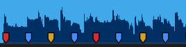
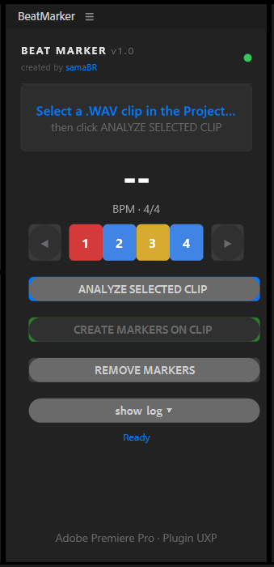
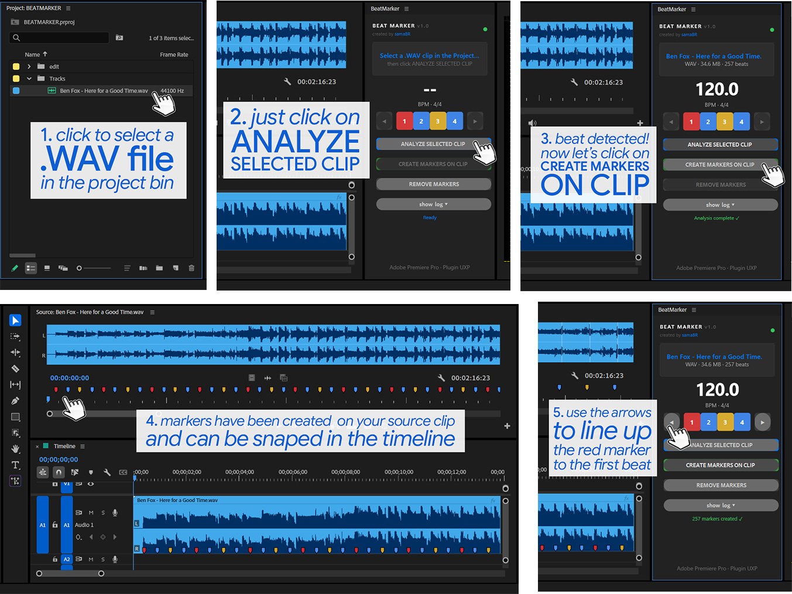

Auto-detects BPM and places colored markers on your source clip. Cut to the beat — automatically.
No subscription. No account. No dependencies.
SUPPORTS .MP3 and .WAV files


Built by an editor, for editors. One click to analyze, one click to mark.
Automatically detects tempo from any WAV or MP3 file. No manual tapping, no guessing.
Beat 1 in red, backbeats in blue, beat 3 in yellow. Instantly visual rhythm reference on your source clip.
See how reliable the detection was before committing. Green means rock solid. Red means check manually.
Toggle which beats to mark. Just the downbeat? Only 1 and 3? Your call — tap to toggle.
Grid landed off by one beat? Shift the phase without re-analyzing. One click left or right.
Full UI in English and Portuguese (PT-BR). Language detected automatically from your system.
The color system maps directly to beat position so you can navigate your timeline at a glance.
The strongest beat of the bar. Your primary cut point.
Where the snare hits. The pulse that drives the groove.
Mid-bar emphasis. Great for secondary cut points and transitions.
Pick any .WAV or .MP3 clip in the Premiere Pro Project panel.
Click Analyze. BeatMarker detects the BPM and maps every beat.
Click Create Markers. Colored markers appear instantly on your source clip.
Open the clip in the Source Monitor and cut to the beat with a visual grid.
Works in the Timeline and in the Source Monitor.

Download the .ccx file, close Premiere Pro, double-click — done. No Node, no Python, no dependencies.